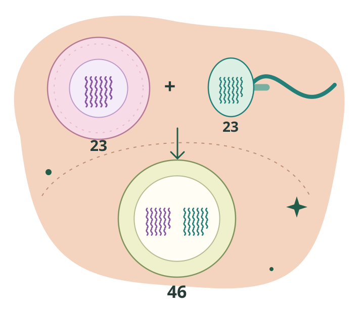

Mitosis
Conserva2 células · 2n = 4 cada una
Conservar para crecer
Una división. Información genética muy similar, salvo posibles mutaciones. No necesita una segunda división para completar la mitosis.
Biología parte 2 · Actividad 04 de 04
Mitosis vs. meiosis y reproducción
Ya conoces los dos repartos. Ahora descubre cómo se conectan con los gametos, la fecundación y el comienzo de una nueva vida.

01 Dos procesos, dos misiones
La mitosis conserva el número de cromosomas. La meiosis forma células con un solo juego y permite producir gametos.
Compara el número de células y los juegos de cromosomas. La citocinesis completa cada separación.
2 células · 2n = 4 cada una
Una división. Información genética muy similar, salvo posibles mutaciones. No necesita una segunda división para completar la mitosis.
4 células · n = 2 cada una
Dos divisiones. Un juego por célula y nuevas combinaciones genéticas gracias al entrecruzamiento y al reparto de homólogos.
Modelo con cuatro cromosomas iniciales para seguirlos mejor. Los colores indican el origen del ADN. No son los números humanos.
| La pregunta | Mitosis | Meiosis |
|---|---|---|
| ¿Para qué? | Crecimiento, reparación y reemplazo celular. | Reproducción sexual: formación de gametos en humanos. |
| ¿En qué células humanas? | En muchas células somáticas; también puede ocurrir en la línea germinal. | En células de la línea germinal que entran en meiosis. |
| ¿Cuántas divisiones? | 1 | 2 |
| ¿Cuántas células al final? | 2 | 4 productos haploides, en el esquema general. |
| ¿Qué pasa con los cromosomas? | Se conserva el número por célula. | Se reduce a la mitad por célula. |
| ¿Qué pasa con los juegos? | Se conserva la ploidía: si empieza 2n, termina 2n. | De dos juegos a uno: 2n → n. |
| ¿Cómo es la información? | Genéticamente muy similar, salvo cambios como mutaciones. | Nuevas combinaciones genéticas por entrecruzamiento y distribución de homólogos. |
| Un ejemplo humano | Producir células para reparar la piel: 46 → 46. | Producir células haploides para formar gametos: 46 → 23. |
Los números describen una división completa con reparto del citoplasma. En la formación de óvulos, los productos reciben cantidades desiguales de citoplasma: solo uno llega a ser gameto funcional; los otros son cuerpos polares. No se forman cuatro óvulos funcionales.
El detalle que cambia todo
Se separan las cromátidas hermanas. Cada una pasa a ser un cromosoma independiente.
Se separa un cromosoma de cada par. Sus dos cromátidas todavía siguen juntas.
Se separan las cromátidas hermanas en cada una de las dos células haploides.
Meiosis I reduce los juegos; Meiosis II separa las copias. Después de la primera división ya hay células haploides, aunque cada cromosoma aún tenga dos cromátidas.
El ADN contiene la información. Los genes son regiones de ADN y los cromosomas lo organizan con proteínas.
El ADN se replica una vez antes de la mitosis o antes de Meiosis I. No se vuelve a copiar entre Meiosis I y II.
Una célula humana diploide, después de replicar el ADN y antes del reparto, sigue teniendo 46 cromosomas, ahora con 92 cromátidas. Copiar ADN no añade un juego de homólogos.
02 Dos gametos, un comienzo
Un gameto es una célula sexual haploide. En humanos, tanto el óvulo como el espermatozoide llevan 23 cromosomas. Explora qué ocurre al unirse.
Cada uno aporta un juego.
23 + 23
Los gametos humanos son células sexuales haploides. Cada uno contiene normalmente 23 cromosomas; su formación está relacionada con la meiosis.
Todavía son dos células distintas. Un gameto no es un cigoto.
Mira la historia completa
La meiosis y la fecundación mantienen el número de cromosomas entre generaciones. La mitosis permite aumentar el número de células conservando sus juegos.
Sus células de la línea germinal que inician meiosis son 2n.
Meiosis ↓Un juego, n, en cada gameto. Se une uno de cada progenitor.
Fecundación ↓Primera célula del nuevo organismo: 2n.
Mitosis ↓Más células, con el número de cromosomas conservado.
Hasta un nuevo adulto ↺Piensa en 23 + 23 = 46. Si dos gametos humanos tuvieran 46 cada uno, su unión daría 92. Reducir a un juego permite recuperar dos en la fecundación.
03 La información se combina
La reproducción sexual reúne tres fuentes de nuevas combinaciones. Así, los hermanos biológicos suelen tener información genética distinta.
El entrecruzamiento intercambia segmentos entre cromátidas no hermanas de homólogos en Profase I.
La orientación independiente de los pares permite distintos repartos de cromosomas de origen materno y paterno.
La unión de un gameto de cada progenitor reúne dos aportes genéticos en un nuevo organismo.
Los gemelos monocigóticos son un caso especial: se originan a partir del mismo cigoto.
04 Tú haces las conexiones
Dos prácticas sin calificación. Lee las pistas y vuelve a intentar cuando lo necesites.
Elige las piezas en orden, desde una célula de la línea germinal hasta la división del cigoto. Usa clic, toque o teclado.
05 El gran repaso de la sesión
22 preguntas, cuatro con dibujos. ADN, cromosomas, mitosis, meiosis y reproducción. Tu primera respuesta confirmada cuenta; cada una trae una explicación.
Conecta la información genética, los dos tipos de división y la reproducción. Al terminar podrás revisar tus errores y repetir.
Recorrido terminado
Vuelve a la idea que quieras reforzar
La meiosis prepara gametos haploides. La fecundación reúne dos juegos en el cigoto. La mitosis permite producir más células conservando la información.
Una célula humana tiene 46 cromosomas. Explica cómo puede dar origen a un gameto de 23, cómo ese gameto participa en la formación de un cigoto de 46 y cómo el cigoto produce nuevas células de 46.
Incluye las palabras ADN, replicación, meiosis, haploide, fecundación, cigoto y mitosis.